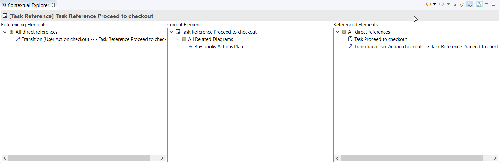
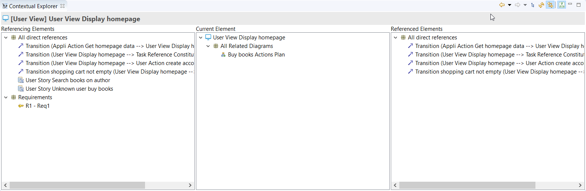
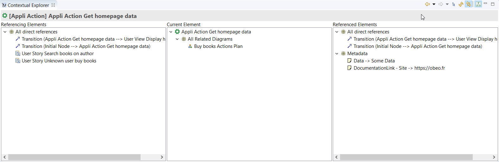
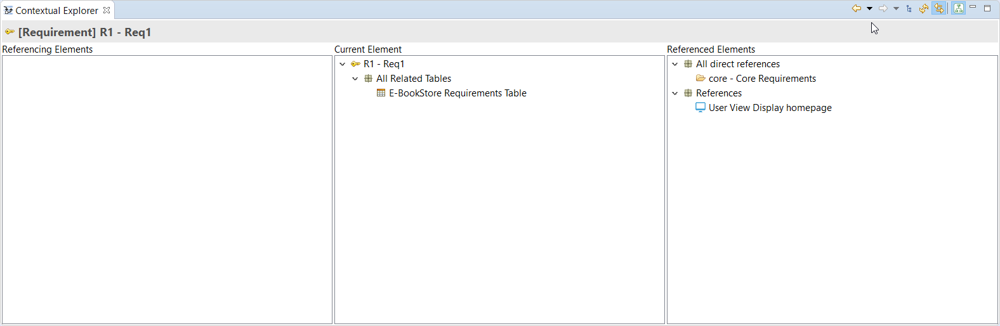
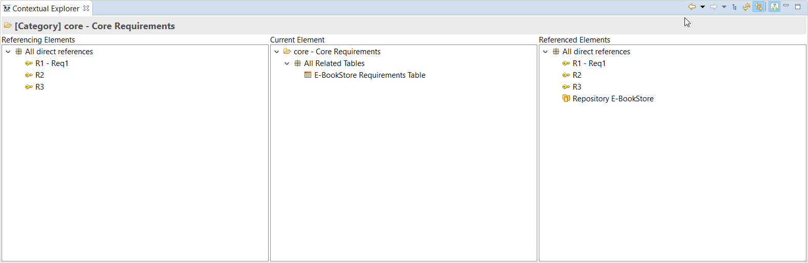
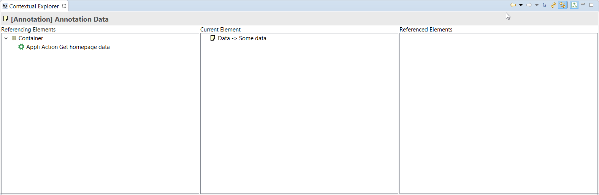
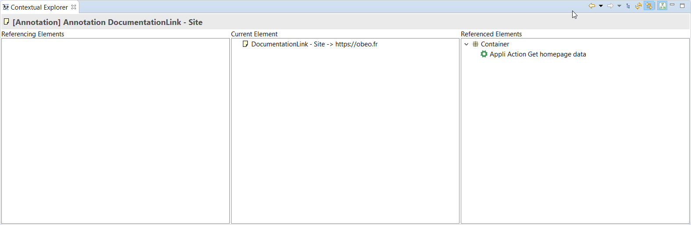

Copyright © 2008, 2026 Obeo - All rights reserved. This program and the accompanying materials are made available under the terms of the Eclipse Public License v2.0
La vue Contextual Explorer est une vue utilisée principalement pour donner des informations contextuelles en affichant les relations entre les éléments d’un projet.
La documentation du Contextual Explorer est disponible à cette adresse : https://wiki.eclipse.org/ModelingAmalgam/ContextualExplorer
Ouvrir la vue Contextual Explorer depuis le menu :
Window > Show View > Other... > Contextual Explorer (catégorie Amalgam)

La vue Contextual Explorer est divisée en trois zones verticales. La zone du milieu affiche l'élément sélectionné ainsi que les représentations dans lesquelles l'élément sélectionné apparaît. La zone de gauche affiche les éléments qui font référence à l'élément affiché dans la zone centrale. La zone de droite affiche les éléments référencés par l'élément affiché dans la zone centrale. Les différents éléments à afficher sont triés dans différentes catégories pour une meilleure lisibilité.
Lorsque l'élément sélectionné est un élément des métamodèles
Database ou
Environment (à l’exception des métadonnées) :
La zone de gauche peut afficher les catégories :

La zone de droite peut afficher les catégories :

Lorsque l'élément sélectionné est un
Requirement :
La zone de droite peut afficher les catégories :

Lorsque l'élément sélectionné est une catégorie (du métamodèle
Requirement) ou un
Repository :
La zone de gauche peut afficher les catégories :
La zone de droite peut afficher les catégories :

Lorsque l'élément sélectionné est une métadonnée (à l’exception des métadonnées de documentation) :
La zone de gauche peut afficher la catégorie
Container sous laquelle s’affichent les éléments qui contiennent des métadonnées.

Lorsque l'élément sélectionné est une métadonnée de documentation, la catégorie Container s’affiche dans la zone de droite et non pas à gauche.

Il est possible de contribuer de nouvelles catégories ainsi que les éléments contenus en contribuant au point d’extension
org.eclipse.amalgam.explorer.contextual.core.contentProviderCategory.